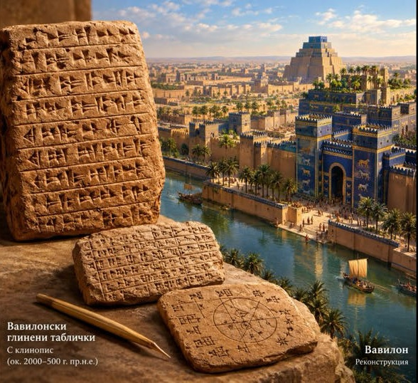
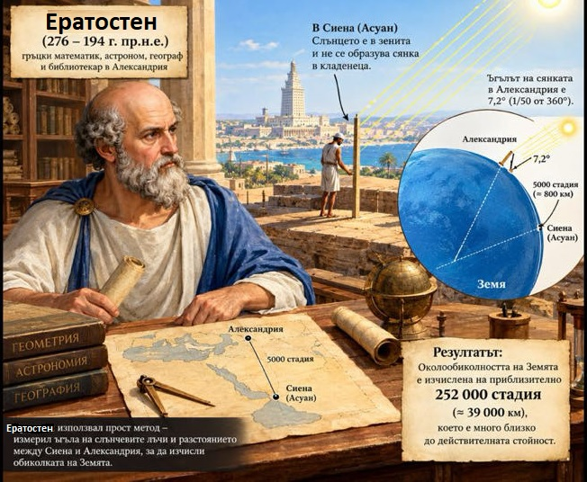
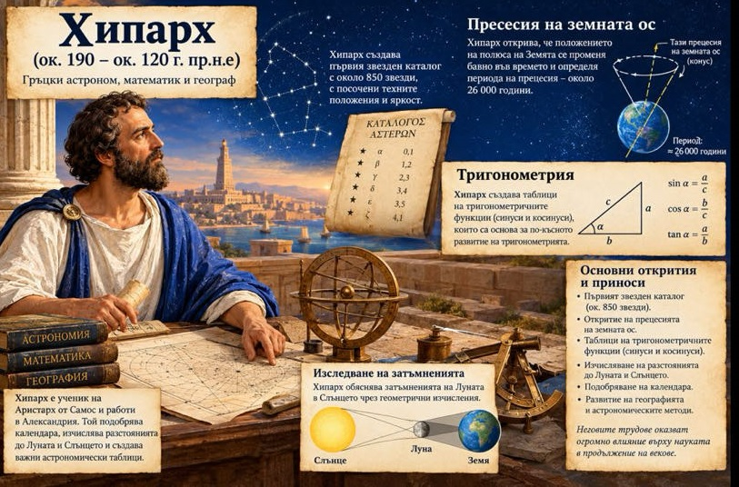

Вавилонските глинени таблички
Те са едни от най-старите писмени паметници в човешката история, създадени в Древна Месопотамия (днешен Ирак).
Те представляват плочки от влажна глина, върху които се е писало с помощта на остра тръстика (стилус), оставяща отпечатъци с формата на клинове – откъдето идва и наименованието на писмеността: клинопис.
След изписването табличките са били изпичани на слънце или в пещи, за да се запазят трайно.
Ето най-важните аспекти, свързани с тях:
1. Тематика и съдържание
Противно на очакванията, че древните текстове съдържат само митове, по-голямата част от откритите таблички имат практическо приложение:
Администрация и търговия:
Сметки, разписки за стоки (зърно, добитък), договори за продажба, завещания и съдебни решения.

Математика и астрономия:
Вавилонците са използвали шестдесетична бройна система (база 60), която използваме и днес за измерване на времето (60 минути/секунди) и
кръга (360 градуса). Някои таблички (като известната Plimpton 322) показват напреднали познания по тригонометрия и Питагоровата теорема векове преди Питагор.
Литература и религия:
Върху глина са записани епоси (като Епоса за Гилгамеш), молитви, химни към боговете и сътворението на света (Енума Елиш).
Закони:
Най-известният правен кодекс – Кодексът на Хамурапи – е записан на каменна стела, но много от законите и прецедентите са се разпространявали и
съхранявали именно върху глинени таблички.
2. Как са се съхранили?
Глината се оказва изключително издръжлив материал. Докато папирусът и пергаментът гният и изчезват, изпечената глина може да оцелее хилядолетия под земята.
Парадоксално, много архиви са се запазили благодарение на пожари при превземането на древните градове – огънят буквално е изпичал и консервирал табличките завинаги.
3. Значими открития
Библиотеката на Ашурбанипал: Макар и асирийска (в Ниневия), тази библиотека съдържа десетки хиляди таблички, много от които са копия на по-стари вавилонски и шумерски текстове.
Табличката Plimpton 322: Вавилонска табличка от около 1800 г. пр.н.е., съдържаща таблица с питагорови тройки, което доказва невероятното ниво на вавилонската математика.
Ако проявявате интерес към конкретен аспект, мога да ви разкажа повече за вавилонската математика, как точно е бил разчетен клинописът или за съдържанието на Епоса за Гилгамеш.
Ератостен

Ератостен от Кириней е един от най-великите умове на Античността, наричан от съвременниците си „Бета“, защото бил вторият най-добър във всяка научна сфера на своето време.
Въпреки това неговото най-голямо постижение е абсолютно първокласно: той изчислява обиколката на Земята още през III в. пр.н.е. само с помощта на едно дървено колче,
сянката му и елементарна геометрия, като грешката му е била под 2%!
Освен като баща на географията, той остава в историята и с гениалния си математически метод за намиране на прости числа.
Сито на Ератостен
Това е древен алгоритъм за бързо намиране на всички прости числа до определено число \(n\). Методът работи чрез механично „пресяване“ (задраскване) на сложните числа.
Как работи методът (напр. до 30):
1. Записват се всички числа от 2 до 30.
2. Започва се с първото просто число – 2. Оставя се, а всички негови кратни (4, 6, 8...) се задраскват.
3. Отива се на следващото незадраскано число – 3. То е просто. Оставя се, а всички негови кратни (6, 9, 12...) се задраскват.
4. Следващото свободно число е 5. Процесът се повтаря за неговите кратни.
5. Това продължава, докато се стигне до число, чийто квадрат е по-голям от 30
Всички числа, които останат незадраскани, са прости.
.
Хипарх Никейски – човекът, който подреди звездите

Хипарх Никейски бил древногръцки астроном, математик и географ, живял през II век пр.н.е.
Той обичал да наблюдава нощното небе и с голямо търпение изучавал движението на звездите и планетите.
Работил предимно на остров Родос, където правел точни наблюдения и сравнявал резултатите си.
Едно от най-големите му постижения било съставянето на каталог на звездите, в който ги подреждал според тяхната яркост.
Хипарх открил и, че положението на звездите бавно се променя през вековете. Неговите изследвания помогнали на следващите поколения учени да разбират по-добре Вселената.
Интересно за личността: Хипарх бил известен със своето трудолюбие и стремеж към истината.
Той вярвал, че природата може да бъде разбрана чрез внимателни наблюдения, точни измервания и математически изчисления. Затова често е смятан за един от най-великите астрономи на Античността.